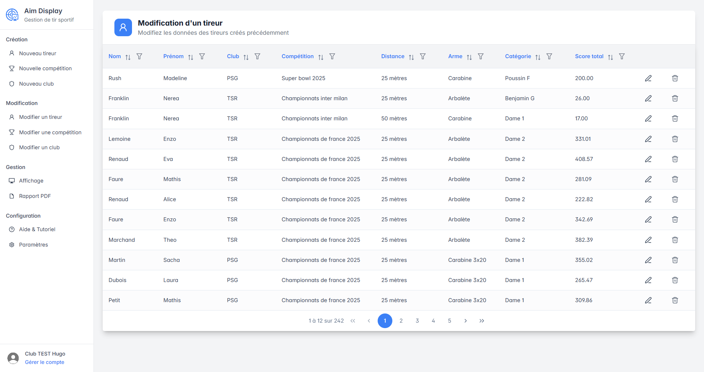
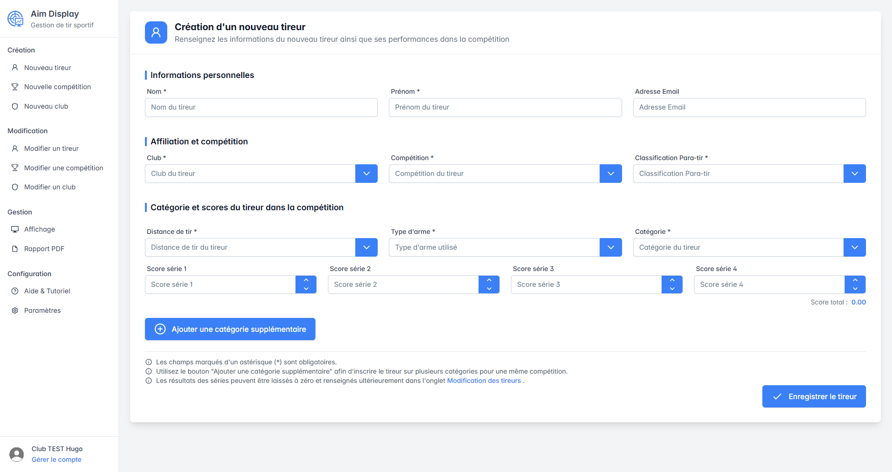
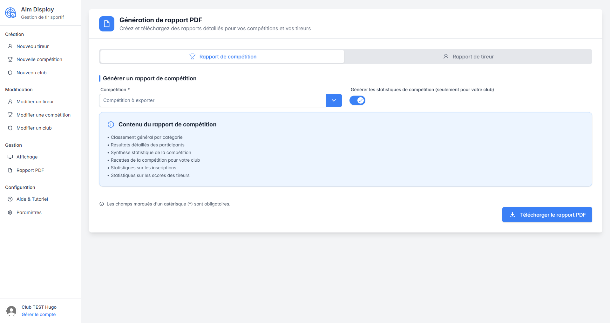
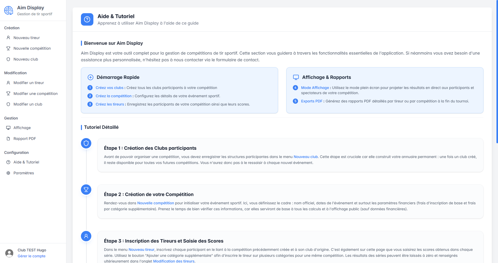

AU CŒUR DU CONCOURS
Les résultats prennent
vie, en direct.
Diffusez les classements par catégorie sur un second écran ou une télévision reliée à un PC. Le public suit la compétition, au rythme des scores.
Voir l’aperçuDe la première inscription au classement final.
Gérez vos compétitions de tir sportif et partagez vos résultats avec Aim Display.
Disponible sur Windows 10 et 11




Un classement lisible, pour les tireurs comme pour le public.
Agrandir (nouvel onglet)TOUT EST À SA PLACE
Les outils essentiels, réunis dans une interface claire. Concentrez-vous sur ce qui compte : votre événement.
AU CŒUR DU CONCOURS
Diffusez les classements par catégorie sur un second écran ou une télévision reliée à un PC. Le public suit la compétition, au rythme des scores.
Voir l’aperçuDates, lieu, tarifs : préparez votre concours et retrouvez toutes ses informations au même endroit.
De la préparation au jour JGérez les inscriptions par club, discipline, distance et catégorie, avec la classification para-tir.
Voir les inscriptionsCentralisez les clubs participants et rattachez rapidement chaque tireur à sa structure.
Un annuaire facile à retrouverExportez les classements, les statistiques et les recettes en PDF. Remettez aussi un bilan personnalisé à chaque tireur.
Découvrir les rapportsUN PARCOURS NATUREL
Quatre étapes, un seul logiciel.
Gardez le fil de votre compétition.
Créez la compétition, ajoutez les clubs et inscrivez les tireurs.
Saisissez les scores au fil des séries. Le classement se met à jour automatiquement.
Affichez les résultats sur un second écran pour les participants et le public.
Générez les rapports PDF pour votre club et les bilans individuels des tireurs.
L’ESPRIT AIM DISPLAY
Développé par un tireur, pour les tireurs. Aim Display s’appuie sur les retours du club de tir sportif Rochefortais pour répondre aux besoins du terrain.
Moins de ressaisies, des informations faciles à retrouver.
Une interface claire et un guide intégré au logiciel.
Les retours des clubs font avancer Aim Display.
À VOUS DE JOUER
Installez Aim Display sur l’ordinateur du club.
Et faites place à la compétition.
Votre espace de gestion de tir sportif.
Télécharger pour WindowsInstallateur Windows · .exeTéléchargez l’installateur Windows, ouvrez-le et suivez les étapes d’installation. Lancez ensuite Aim Display et créez votre compte dans l’application.
D’un ordinateur sous Windows 10 ou Windows 11 et d’une connexion internet. Pour diffuser les classements au public, connectez un second écran ou une télévision à un PC.
La rubrique « Aide & Tutoriel » du logiciel vous guide dans la création des clubs, des compétitions et des tireurs, puis dans l’affichage des résultats et l’export des rapports.